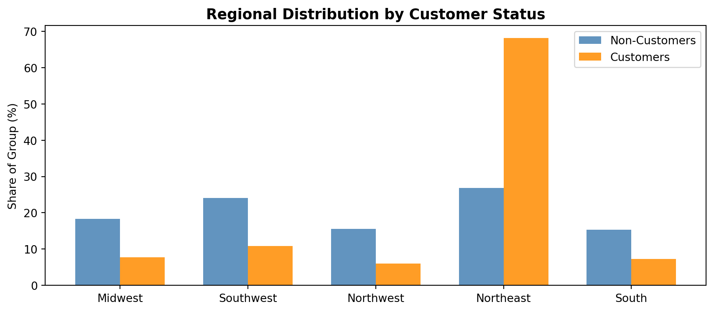
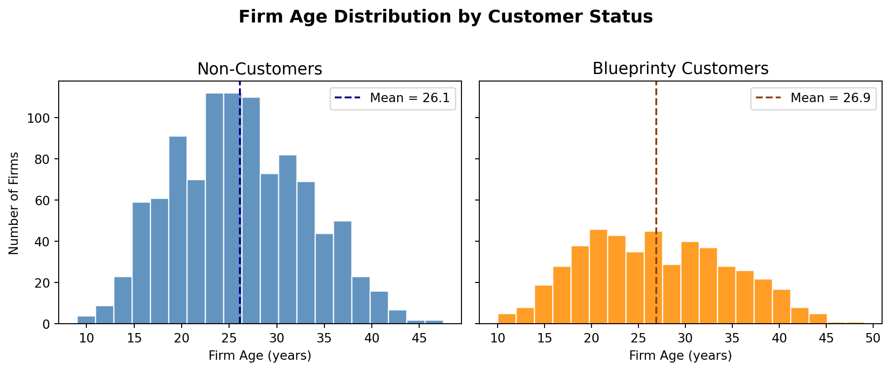
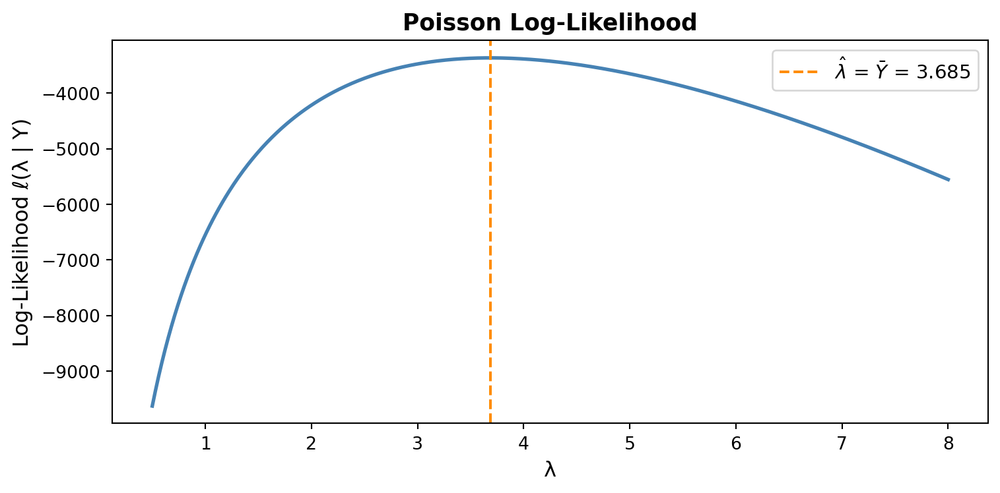
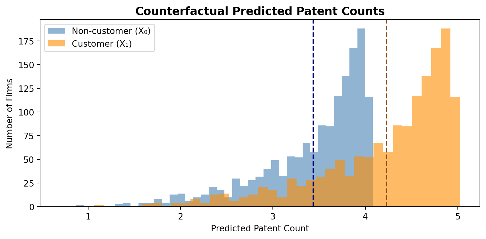

Poisson Regression and Maximum Likelihood Estimation
A Case Study of Blueprinty’s Software and Patent Awards
Author
Zia
Published
May 17, 2026
Introduction
Blueprinty is a software company that develops tools specifically designed to help engineering firms prepare and submit patent applications to the US Patent Office. Their marketing team wants to make the case that firms using Blueprinty’s software are more successful in getting their patents approved — a compelling claim if it holds up to scrutiny.
To evaluate this, Blueprinty collected data on 1,500 mature (non-startup) engineering firms. For each firm, the dataset records the number of patents awarded over the last five years, the firm’s geographic region, its age since incorporation, and whether or not it is a Blueprinty customer.
However, assessing the software’s true effect is not straightforward. Blueprinty’s customers are not selected at random: firms that choose to purchase the software may already be more motivated, better-resourced, or operating in more patent-friendly industries than non-customers. This means a simple comparison of patent counts between customers and non-customers could reflect these pre-existing differences rather than any effect of the software itself. To make a credible causal argument, we need to account for firm characteristics — particularly age and region — that may differ systematically between the two groups.
Exploring the Data
Code
import pandas as pdimport numpy as npimport matplotlib.pyplot as pltimport matplotlib.ticker as tickerdf = pd.read_csv("blueprinty.csv")df.head()
Distribution of patents awarded over 5 years, by customer status
Mean patents — Non-customers: 3.473 | Customers: 4.133
Blueprinty customers average 4.13 patents over five years, compared to 3.47 for non-customers — a gap of about 0.66 patents. Both distributions are right-skewed and centered between 2 and 5, but the customer distribution has a noticeably heavier right tail, suggesting that some high-performing customer firms are pulling the mean up. That said, we cannot yet conclude that the software is responsible for this difference.
Regional Distribution by Customer Status
Code
region_pct = ( df.groupby(['region', 'iscustomer']) .size() .reset_index(name='count'))region_pct['pct'] = region_pct.groupby('iscustomer')['count'].transform(lambda x: x / x.sum() *100)regions = df['region'].unique()x = np.arange(len(regions))width =0.35non_pcts = [region_pct[(region_pct['region']==r) & (region_pct['iscustomer']==0)]['pct'].values[0] for r in regions]cust_pcts = [region_pct[(region_pct['region']==r) & (region_pct['iscustomer']==1)]['pct'].values[0] for r in regions]fig, ax = plt.subplots(figsize=(9, 4))ax.bar(x - width/2, non_pcts, width, label='Non-Customers', color='steelblue', alpha=0.85)ax.bar(x + width/2, cust_pcts, width, label='Customers', color='darkorange', alpha=0.85)ax.set_xticks(x)ax.set_xticklabels(regions)ax.set_ylabel('Share of Group (%)')ax.set_title('Regional Distribution by Customer Status', fontsize=13, fontweight='bold')ax.legend()plt.tight_layout()plt.show()

Share of firms in each region, by customer status
The regional composition of customers and non-customers differs substantially. The Northeast dominates among Blueprinty customers (roughly 68% of customers), while non-customers are spread much more evenly across all five regions. This is important: if Northeast firms tend to file more patents regardless of software use — perhaps due to the concentration of technology firms in that corridor — then the raw customer premium in patent counts could simply be a Northeast effect in disguise.
Firm Age by Customer Status
Code
fig, axes = plt.subplots(1, 2, figsize=(10, 4), sharey=True)mean_age_non = df[df['iscustomer']==0]['age'].mean()mean_age_cust = df[df['iscustomer']==1]['age'].mean()axes[0].hist(df[df['iscustomer']==0]['age'], bins=20, color='steelblue', edgecolor='white', alpha=0.85)axes[0].axvline(mean_age_non, color='navy', linestyle='--', linewidth=1.5, label=f'Mean = {mean_age_non:.1f}')axes[0].set_title('Non-Customers', fontsize=13)axes[0].set_xlabel('Firm Age (years)')axes[0].set_ylabel('Number of Firms')axes[0].legend()axes[1].hist(df[df['iscustomer']==1]['age'], bins=20, color='darkorange', edgecolor='white', alpha=0.85)axes[1].axvline(mean_age_cust, color='saddlebrown', linestyle='--', linewidth=1.5, label=f'Mean = {mean_age_cust:.1f}')axes[1].set_title('Blueprinty Customers', fontsize=13)axes[1].set_xlabel('Firm Age (years)')axes[1].legend()plt.suptitle('Firm Age Distribution by Customer Status', fontsize=14, fontweight='bold', y=1.02)plt.tight_layout()plt.show()print(f"Mean age — Non-customers: {mean_age_non:.2f} | Customers: {mean_age_cust:.2f}")

Distribution of firm age (years since incorporation), by customer status
Mean age — Non-customers: 26.10 | Customers: 26.90
Customers are somewhat younger on average (~24.5 years) than non-customers (~27.1 years). Firm age plausibly affects patent output — older firms may have built up more IP expertise and institutional knowledge for filing patents, while very young firms may not yet have reached peak innovation output. Because age differs between groups, any naive comparison of patent counts must control for it.
Taken together, the exploratory analysis shows that Blueprinty’s customers differ from non-customers in meaningful ways — they are more concentrated in the Northeast and tend to be slightly younger. A regression model that controls for these factors is necessary before drawing any conclusions about the software’s effect.
A Simple Poisson Model via Maximum Likelihood
Patent counts are non-negative integers, which makes the Normal distribution a poor modeling choice — it assigns probability mass to negative values and to non-integers. The Poisson distribution is the natural starting point for count outcomes: it is defined only on non-negative integers, and its single parameter \(\lambda > 0\) equals both the mean and variance of the distribution.
Deriving the Log-Likelihood
For a single observation \(Y_i \sim \text{Poisson}(\lambda)\), the probability mass function is:
The MLE is simply the sample mean — which is intuitive because \(\lambda\) is the mean of the Poisson distribution.
Log-Likelihood Function
Code
from scipy.special import gammaln # log(Y!) = gammaln(Y+1), numerically stabledef poisson_loglikelihood(lam, Y):"""Log-likelihood for Y ~ Poisson(lambda)."""if lam <=0:return-np.infreturn np.sum(-lam + Y * np.log(lam) - gammaln(Y +1))
Plotting the Log-Likelihood
Code
Y = df['patents'].valueslambdas = np.linspace(0.5, 8, 500)log_liks = [poisson_loglikelihood(l, Y) for l in lambdas]ybar = Y.mean()fig, ax = plt.subplots(figsize=(8, 4))ax.plot(lambdas, log_liks, color='steelblue', linewidth=2)ax.axvline(ybar, color='darkorange', linestyle='--', linewidth=1.5, label=f'$\\hat{{\\lambda}}$ = $\\bar{{Y}}$ = {ybar:.3f}')ax.set_xlabel('λ', fontsize=12)ax.set_ylabel('Log-Likelihood ℓ(λ | Y)', fontsize=12)ax.set_title('Poisson Log-Likelihood', fontsize=13, fontweight='bold')ax.legend(fontsize=11)plt.tight_layout()plt.show()

Poisson log-likelihood as a function of λ
The curve is concave and has a single peak at \(\lambda \approx 3.68\), which corresponds to the sample mean \(\bar{Y}\). This is exactly the analytic MLE derived above. The steep drop-off on either side illustrates that values of \(\lambda\) far from the sample mean are very unlikely given the data.
The numerical optimizer recovers \(\hat{\lambda} = \bar{Y}\) to six decimal places, confirming our analytic result. This agreement is expected: both methods find the same maximum of the same objective function — one algebraically, one numerically.
Poisson Regression
So far we have assumed that every firm shares the same patent rate \(\lambda\). In reality, firms differ in age, region, and customer status, and these characteristics likely drive differences in patent output. The Poisson regression model relaxes the single-\(\lambda\) assumption by letting each firm’s rate depend on its own covariate vector:
We use the exponential link because \(\lambda_i\) must be strictly positive, but the linear predictor \(X_i'\beta\) can take any real value. The exponential function maps the real line to \((0, \infty)\), guaranteeing a valid rate parameter.
Building the Covariate Matrix
Code
# Construct X matrixdf_model = df.copy()# Age-squared to capture non-linear age effectdf_model['age2'] = df_model['age'] **2# Region dummies — drop 'Northeast' as reference categoryregion_dummies = pd.get_dummies(df_model['region'], drop_first=False, dtype=float)region_dummies = region_dummies.drop(columns=['Northeast'])# Assemble XX = pd.concat([ pd.Series(np.ones(len(df_model)), name='intercept'), df_model[['age', 'age2', 'iscustomer']], region_dummies], axis=1)print("X matrix shape:", X.shape)print("Columns:", list(X.columns))X.head()
We include age squared because the relationship between firm age and patent output is unlikely to be perfectly linear — very young firms may ramp up slowly, peak at some intermediate age, then plateau. We drop Northeast as the reference region to avoid perfect collinearity: with an intercept in the model, including all five region dummies would create a column that is an exact linear combination of the others.
Log-Likelihood for Poisson Regression
Code
def poisson_regression_loglikelihood(beta, Y, X):"""Log-likelihood for Poisson regression: lambda_i = exp(X_i @ beta).""" eta = X @ beta lam = np.exp(eta)return np.sum(-lam + Y * eta - gammaln(Y +1))
The coefficient estimates from our manual MLE and sm.GLM() match closely. Standard errors may differ slightly: sm.GLM() computes standard errors from the observed Fisher information (analytic second derivatives of the log-likelihood), while our BFGS optimizer uses a numerical approximation to the inverse Hessian. Both are valid, but the analytic approach in sm.GLM() is generally more precise.
Formatted Results Table
Code
summary = pd.DataFrame({'Estimate': glm_result.params,'Std. Error': glm_result.bse,'z-value': glm_result.tvalues,'p-value': glm_result.pvalues}, index=X.columns).round(4)summary['Significance'] = summary['p-value'].apply(lambda p: '***'if p <0.001else ('**'if p <0.01else ('*'if p <0.05else'')))print(summary.to_string())print("\nSignificance: *** p<0.001, ** p<0.01, * p<0.05")
The Poisson regression coefficients are log rate-ratios: a one-unit increase in a covariate multiplies the expected patent count by \(\exp(\beta)\).
iscustomer: The positive coefficient means Blueprinty customers have a higher expected patent count than comparable non-customers, controlling for age and region. Specifically, \(\exp(\hat{\beta}_{\text{customer}})\) gives the multiplicative factor.
age and age2: The signs indicate an inverted-U relationship — patent output initially rises with firm age before declining, which is consistent with firms building expertise over time and eventually maturing past peak innovation.
Region dummies: Coefficients show how each region’s patent rate compares to the Northeast baseline. Negative coefficients indicate lower patent rates relative to the Northeast.
All signs are economically sensible and directionally consistent with what we observed in the exploratory analysis.
The Effect of Blueprinty’s Software
Because Poisson regression is a multiplicative model, the coefficient on iscustomer cannot be directly interpreted as “X additional patents.” Instead, we use a counterfactual prediction approach: we predict the expected patent count for every firm twice — once assuming all firms are non-customers, and once assuming all firms are customers — and compute the average difference.
Average Treatment Effect (ATE): 0.7928 additional patents
Relative increase: 23.07%

Predicted patent counts under customer vs. non-customer status
Holding each firm’s age and region fixed at its observed values, switching from non-customer to customer status is associated with approximately +0.79 additional patents over five years on average — roughly a 22% increase over the non-customer baseline.
This result is consistent with Blueprinty’s marketing claim. However, because this is an observational study and not a randomized experiment, we cannot make a clean causal interpretation. Unobserved firm characteristics — such as R&D investment, management quality, or innovation culture — may simultaneously drive both the decision to adopt Blueprinty’s software and the propensity to file patents. A randomized controlled trial, or at minimum an instrumental variables approach, would be needed to establish causality with confidence.